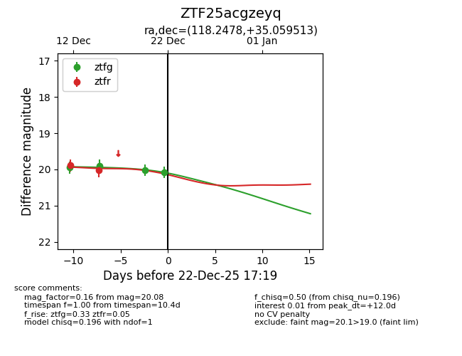
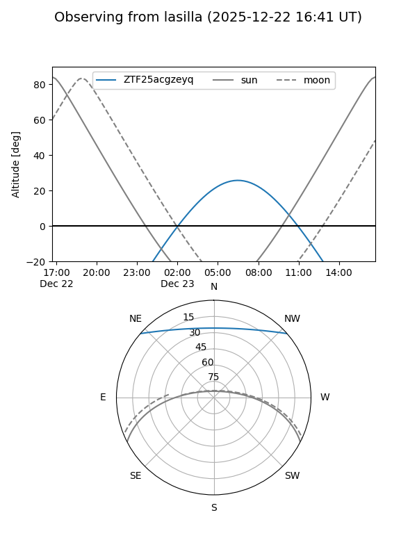
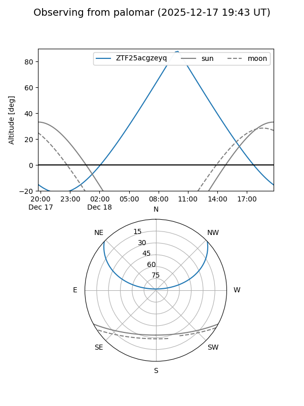
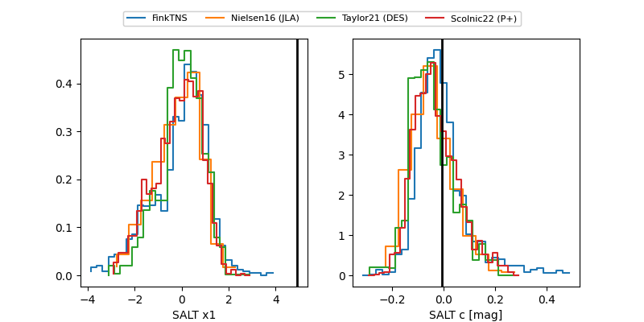

ZTF25acgzeyq
Target ZTF25acgzeyq at 2025-12-22 14:03
Aliases and brokers:
FINK: fink-portal.org/ZTF25acgzeyq
Lasair: lasair-ztf.lsst.ac.uk/objects/ZTF25acgzeyq
ALeRCE: alerce.online/object/ZTF25acgzeyq
alt names
ZTF25acgzeyq (ztf,fink_ztf)
Coordinates:
equatorial (ra, dec) = 118.2478,+35.05951
equatorial (HMS+DMS) = 07:52:59.48,+35:03:34.25
galactic (l, b) = (185.3548,+27.08073)
Flags:
Photometry:
last ztfg=20.03, ztfr=20.02
3 ztfg, 2 ztfr detections
Lightcurve

Visibility


Additional plots
